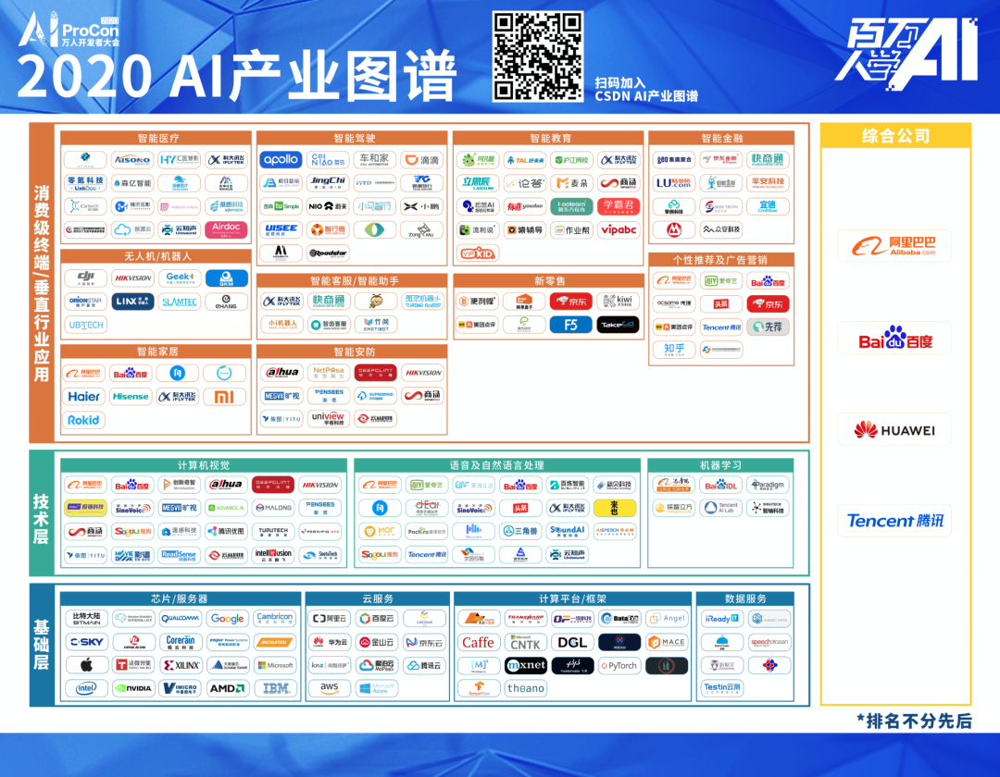
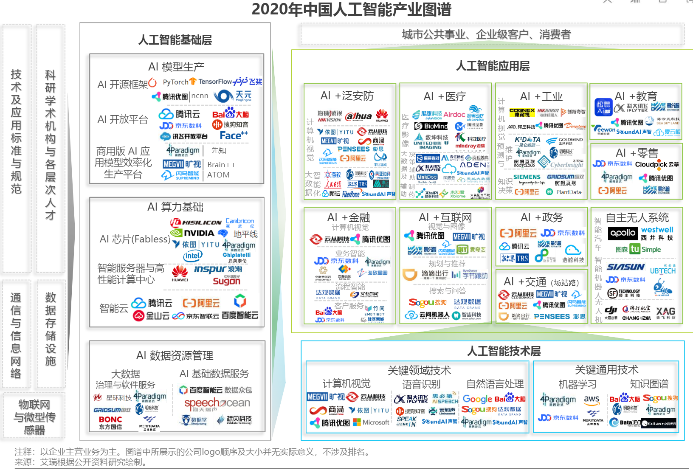

5.1. AI行业分析 1¶
 
5.1.1. 市场规模 9¶
比如，深圳市人工智能行业协会发布的《2019 人工智能产业发展白皮书》中提出：预计到 2020 年，我国人工智能市场规模约 990 亿元。如果你是人工智能行业的产品经理，就可以通过整体的规模来倒推自己产品的规模了。
5.1.2. 2020 AI Hype Cycle¶
Fig. 5.1.1 2020人工智能技术成熟度曲线报告¶
新内容： 4
健康护照（健康码）
形成性人工智能：一种能够用动态变更对情况作出响应的AI。比如可随时间动态适应的AI，以及可生成新颖的模型来解决特定问题的技术等。
人工智能增强设计
复合人工智能
嵌入式人工智能
生成性人工智能：一种可以创建新颖内容（图像，视频等），或者变更已有内容的AI。新生成的产物跟原始的很像，但不完全相同。这项技术可生成深度伪造的内容，可能会衍生出严重的假信息并带来名誉风险，预计在未来五年内，伪造内容会越来越多。8
负责任的人工智能
人工智能增强开发
自我监督学习
小数据
复合型AI
删除： 7
与去年相比，Gartner将13种技术删除、重新分类或者转移到其他技术曲线中，例如今年Gartner将支持VPA的无线扬声器从所有曲线中删除;AI开发人员工具包现在被分类到AI开发人员和教学工具包类别下;AI PaaS现在属于AI云服务;与AI相关的C&SI服务、AutoML、可解释AI（2020年划归到负责任的AI类别下）、 图形 分析、强化学习移至2020年数据科学和机器学习技术成熟度曲线中;会话式用户界面、 语音识别 、虚拟助理转至2020年自然语言技术成熟度曲线中;量子计算移至2020年计算基础设施技术成熟度曲线中;机器人流程自动化软件从AI技术成熟度曲线中删除。
5.1.4. 优势：极快、极简¶
人工智能可以处理人1秒中可以想出答案的问题，这个问题还需要有以下几个特点：大规模，重复性，限定领域，快速反馈。
人工智能产品设计要以操作极度简单为标准，但是前端的简单代表后端的复杂，系统越复杂，才能越智能。
同样，人工智能的发展依赖于产业生态的共同推进，上游芯片提供算力保障，中游人工智能厂商着力研发算法模型，下游应用领域提供落地场景
Fig. 5.1.2 趋势¶
5.1.5. BAT¶
百度A（AI）B(Big data)C(Cloud)战略，阿里腾讯也有各自云服务，大数据中心，人工智能实验室，这些大公司胜在基础架构层、数据量和资本优势上，拥有大量的人工智能科学家，可以持续优化算法，提升算法模型的准确度。
5.1.6. 准确性¶
5.1.6.1. 需要达到99.9999%¶
如手术机器人，自动驾驶技术，智慧交通等，这些产品和服务直接关系到人的生死，要求具有极高的准确度，需要AI科学家持续的优化，只有达到近乎百分之百的准确度才会商用。
5.1.6.2. 达到99%或者95%就可以¶
如面部识别，语音机器人，无人机农药喷洒，艺术设计，搜索引擎，精准营销等，这些产品和服务对于精确度要求不高，因为即使不精确也不会直接造成人员伤亡。
5.1.7. 垄断程度¶
5.1.7.1. 高¶
行业的垄断程度越高，头部公司的体量越大，最初可能因为缺乏AI技术而采购技术，当技术环境成熟，BAT和google这类公司开源了大量技术后，行业垄断型公司会则会搭建自己的AI团队，搭建自己的大数据，云计算和AI实验室，以运营商行业为例，资源垄断型市场，三家独大，每家都在搭建自己的大数据分析平台，也在搭建自己的人工智能实验室。
5.1.7.2. 低¶
如衣食住行相关的制造业和零售行业，因为分散，他们有需求，但是没有足够体量和资本自己搭建AI团队，所以他们会将AI技术作为一项工具，以合理的价格采购成套服务，来实现+AI的升级。
如同当年的互联网+和+互联网一样，也会演化出AI+和+AI的发展方向。
5.1.7.3. 象限图¶
我认为第一象限因为BAT拥有科学家优势，虽然垄断程度高的企业很有钱，但是因为BAT有数据优势和科学家优势，在这个领域BAT优势明显，可以向企业提供独特的AI服务，提升垄断企业效率，这部分产品需要靠AI科学家驱动。
第三象限虽然技术门槛低，垄断程度低，会出现大量小AI公司进入这个市场，BAT进入这个市场拥有足够的品牌优势，因为市场需求量较大，BAT可以考虑做开放平台，为有垂直领域的AI公司体统底层服务，如果自己来做，这部分服务和产品将是运营和产品来主要驱动。
第二象限暂时来看不太适合进场，第四象限垄断企业会自己组建AI团队来做，我们能看到，手机制造这个还不算垄断的行业中，因为资本实力雄厚，各个厂家已经在组建自己的AI研发团队。
5.1.8. 应用场景2¶
1.场景比较规范，2.需要经验， 3.且数据量大，4.但是反复度高的工作岗位，5.如果监管准入门槛比较低就更好。 1和5可促进快速落地，2、3、4适合深度学习复现场景。
医疗+AI，门槛着重考虑；安防+AI，门槛重在渠道，和海康；无人驾驶，需要规范，市场、大众、政府、产品供应、交通设施等都需要规范。
5.1.9. 2B¶
5.1.9.1. 民营企业¶
赚更多的钱 转型的决心和行动力:只要技术是有用的，可以提升效率或压缩成本的 途径：BAT可以考虑在尽可能多民营企业家聚集的场合，推广真实高效的+AI产品和服务
5.1.9.2. 国营企业¶
国营企业即承担创造价值的责任，也同时承担着保证国有资产不流失的责任，组织内部员工多是对上级和自己的职位负责，所以创新一定要稳妥 用友和亚信等软件开发团队多是长期驻厂，提供运维服务和新需求开发 核心诉求是不犯错，未必有功，但求无过
AIStartups: https://github.com/lipiji/AIStartups

{kind=link}